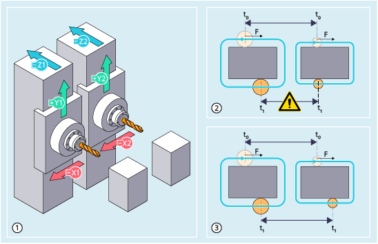

| Hinweis |
|
Die Funktion ist eine lizenzpflichtige Option (Name: "Bahnbezogene Kanalsynchronisation"; Artikelnummer: 6FC5800-0BS66-0YB0) für die Steuerungsvariante SINUMERIK ONE NCU 1760, die über das Lizenzmanagement der Hardware zugeordnet sein muss. |
Die Funktion "Bahnbezogene Kanalsynchronisation" ermöglicht es, zwei Kanäle bzw. einen Kanalverbund während der Abarbeitung eines identischen Teileprogramms zu synchronisieren, wie die folgende Abbildung am Beispiel einer Doppelspindel-Fräsmaschine zeigt:
① | Identische Bearbeitungen in den zwei Kanälen einer Doppelspindel-Fräsmaschine |
② | Werkzeugmittelpunktsbahnen bei inaktiver bahnbezogener Kanalsynchronisation Unterschiede in den Kanälen (Nullpunktverschiebungen, Werkzeugverschleiß, Kompensationen) führen zu unterschiedlichen Werkzeugmittelpunktsbahnen und ohne Synchronisierung verhalten sich die Kanäle asynchron. Da Toleranzabstände zwischen den Kanälen nicht eingehalten werden, besteht die Gefahr von Kollisionen. |
③ | Werkzeugmittelpunktsbahnen bei aktiver bahnbezogener Kanalsynchronisation Durch die Synchronisierung wird der schnellere Kanal abgebremst, sodass die Kanäle in einer bestimmten Toleranz zueinander synchron bleiben. |
| Achtung |
KollisionsgefahrDa durch die Funktion selbst keine Überprüfung erfolgt, ob mechanische Toleranzabstände zwischen den Kanälen eingehalten werden, besteht bei einem Einsatz ohne zusätzliche Schutzmaßnahmen (Überwachung von Schutzbereichen) grundsätzlich die Gefahr einer Kollision. Abhilfe: Funktion immer zusammen mit der internen Kollisionsvermeidung und/oder dem Compile-Zyklus "Achspaar Kollisionsschutz (Protect MyMachine /CC Axis Monitor)" verwenden. Weitere Informationen:
|
Aktivierung und Deaktivierung erfolgen im Teileprogramm über die vordefinierten Prozeduren SYNCMOTON und SYNCMOTOF. Die Aktivierung und Deaktivierung muss in allen beteiligten Kanälen programmiert werden.
Folgende Voraussetzungen sind zu beachten:
In den zu synchronisierenden Kanälen müssen Bearbeitungsbedingungen identisch sein:
Dynamik- und Reglereinstellungen der Achsen
Verhalten von Synchronaktionen
Wirkung von NC/PLC-Nahtstellensignalen
Reaktionen auf Störungen und Alarme
Einzelsatz, Override, NC-Start/Stopp und konfigurierter Halt müssen synchron wirken.
In den Kanälen dürfen nur identischen Werkzeuge für die Bearbeitung aktiviert werden.
Zulässig sind Fräser oder Bohrer, die eine maximale Abweichung des Werkzeugverschleißes vom Werkzeugradius von prozentual 10 % und absolut 0,5 mm einhalten.
Es muss sich in den Kanälen eine ähnliche Werkzeugmittelpunktsbahn ergeben (trotz Unterschieden im Werkzeugverschleiß, in den Nullpunktverschiebungen und in den Kompensationen), welche sich bei synchroner Abarbeitung innerhalb des mechanischen Toleranzabstandes bewegen kann.
Das Teileprogramm darf nur mit folgenden G-Befehlen aktiviert und abgearbeitet werden:
G0, G1, G2, G3, TRANS, ROT, ATRANS, AROT, FIFOCTRL, G17, G40, G41, G42, G500, G54 … G598, G64, G710, G90, G94, CFIN, NORM, G450, SOFT, CUT2DF, CDOF, FFWON, RMI, WALIMOF, DIAMOF, COMPOF, FTOCOF, OSOF, FNORM, CUTCONOF, TCOABS, G140, G340, G290, G462, CP, PAROT, TOROTOF, RTLION, TOWSTD, FENDNORM, DYNNORM, WALCS0, ORISOF
Die Anwendung der Funktion ist nur in der Betriebsart AUTOMATIK zulässig.
| SYNCMOTON(<ChanGroup>) | |
| ... | |
| SYNCMOTOF |
| Bahnbezogene Kanalsynchronisation einschalten | ||||||||||
Wirksamkeit: | Modal | ||||||||||
Hinweis: | |||||||||||
| Mit diesem Parameter wird der Verbund der zu synchronisierenden Kanäle angegeben. | ||||||||||
Typ: | INT | ||||||||||
Wert: | Binär codiert | ||||||||||
Bit | ... | 7 | 6 | 5 | 4 | 3 | 2 | 1 | 0 | ||
Kanal | ... | 8 | 7 | 6 | 5 | 4 | 3 | 2 | 1 | ||
Beispiel: Der Wert 5 (Binärcode 101) adressiert die Kanäle 1 und 3. | |||||||||||
| Bahnbezogene Kanalsynchronisation ausschalten | ||||||||||
Wirksamkeit: | Modal | ||||||||||
| Programmcode | Kommentar |
|---|---|
| N10 DYNNORM G64 SOFT | |
| N20 G94 F5000 | |
| N30 CFIN | |
| N40 SYNCMOTON(3) | ; Bahnbezogene Kanalsynchronisation für Kanal 1 und 2 einschalten. |
| N50 G1 X10 | |
| N60 G1 X20 G41 | |
| N70 G2 X20 Y-20 I0 J-10 | |
| N80 G1 X10 | |
| N90 G1 Y-10 | |
| N100 G2 X20 Y0 I10 J0 | |
| N110 G1 X30 | |
| N120 SYNCMOTOF | ; Bahnbezogene Kanalsynchronisation ausschalten. |
| N130 M30 |
Siehe auch:
Bahnbezogene Kanalsynchronisation (SYNCMOTON, SYNCMOTOF): Weitere Informationen